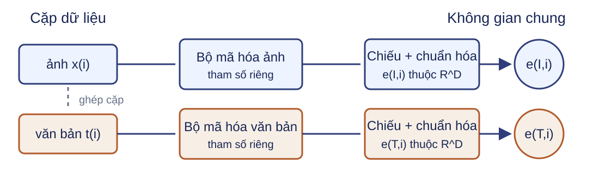

$\Omega$ chỉ gồm vị trí hợp lệ và được phép chọn; vị trí đệm và ký hiệu đặc biệt bị loại theo giao thức. $Z\in\mathbb R^{N\times T\times V}$; chéo entropy chuẩn hóa theo trục từ vựng $V$.
Dùng chéo entropy hợp nhất từ điểm chưa chuẩn hóa; không tính softmax rồi lấy log thủ công.
Biểu diễn đi vào tác vụ phía sau
Phân loại chuỗi
Dùng biểu diễn ký hiệu phân loại rồi thêm đầu ra.
Gán nhãn từng vị trí
Áp dụng đầu ra lên từng vị trí hợp lệ.
Tinh chỉnh cập nhật đầu tác vụ và có thể cập nhật toàn bộ bộ mã hóa theo giao thức đã chọn.
Kiểm tra bộ mã hóa
Câu hỏi: Ký hiệu bị che ở vị trí 4 có được dùng ký hiệu vị trí 5 để dự đoán không? Vị trí nào đóng góp trực tiếp vào sai số MLM?
Có, nếu vị trí 5 hợp lệ. Chỉ các vị trí thuộc $\Omega$ đóng góp trực tiếp vào sai số.
Bộ giải mã dự đoán từ trái sang phải
<bos> mạng nơ-ron học $\longrightarrow$ mạng nơ-ron học <eos>
Hợp đồng huấn luyện và suy luận của mã hóa–giải mã
Huấn luyện
Biểu diễn nguồn $H^{enc}$ tính một lần cho cả lô; toàn bộ $Y^{in}$ đã biết nên tính mọi vị trí cùng lúc.
Suy luận
$H^{enc}$ tính một lần rồi tái dùng ở mọi bước; tiền tố đích tăng thêm một ký hiệu mỗi bước.
Câu hỏi: Khi suy luận, phần nào của phép tính được giữ nguyên giữa hai bước liên tiếp?
Biểu diễn nguồn $H^{enc}$ được giữ nguyên. Chú ý chéo vẫn phải tính với truy vấn đích mới; một triển khai có bộ nhớ đệm có thể tái dùng khóa và giá trị chiếu từ nguồn. Với lô, cờ đang hoạt động theo mẫu dừng mẫu đã gặp EOS.
Huấn luyện trước tạo tham số dùng lại
Dữ liệu và mục tiêu
MLM che “học”; CLM dịch chuỗi để dự đoán ký hiệu kế tiếp.
Huấn luyện trước
Tối ưu cùng tham số trên nhiều ví dụ của mục tiêu đã chọn.
Thích nghi
Tinh chỉnh hoặc điều kiện hóa cho tác vụ phía sau.
Định nghĩa làm việc về mô hình ngôn ngữ lớn
Trong bài này, mô hình ngôn ngữ lớn (LLM) là mô hình ngôn ngữ nơ-ron có quy mô tham số và dữ liệu tương đối lớn, được huấn luyện trước rồi có thể thích nghi cho nhiều nhiệm vụ.
Không có một ngưỡng “lớn” dùng chung cho mọi kiến trúc, thời điểm và miền dữ liệu.
Kiểm tra giới hạn của tên gọi LLM
Câu hỏi: Chỉ từ tên gọi LLM, có thể kết luận đầu ra luôn đúng, an toàn và phù hợp miền sử dụng không?
Không. Ba thuộc tính này cần dữ liệu và giao thức đánh giá riêng cho tình huống sử dụng.
CLIP là một mô hình đa phương thức

Mô hình đa phương thức liên hệ từ hai loại dữ liệu trở lên. CLIP là trường hợp ảnh–văn bản: mỗi cặp $(x_i,t_i)$ đi qua hai bộ mã hóa riêng.
Hai nhánh chỉ gặp nhau ở ma trận tương đồng; kiến trúc này không dùng chú ý chéo và không sinh chú thích.
Log-softmax theo trục văn bản dùng trục 1 của $S$; theo trục ảnh dùng trục 1 của $S^\top$, tức các cột của $S$. Chỉ số đường chéo được lấy sau log-softmax. Giữ hai loss, $1/N$, $\tau>0$ và cross-entropy hợp nhất ổn định.
Trong ví dụ: $Z_0\in\mathbb R^{2\times17\times64}$ và $E_{pos}\in\mathbb R^{1\times17\times64}$ được phát theo lô.
ViT chuẩn hóa trước mỗi nhánh
Trực giác: chuẩn hóa trước nhánh giúp nhánh MSA và MLP nhận đầu vào có phân phối ổn định, còn đường dư giữ đường truyền thông tin và gradient ngắn từ đầu đến cuối chuỗi.
$H_a$ là số đầu chú ý. Tỷ số chi phí dưới đây chỉ xét phần tự chú ý theo chiều chuỗi, không gồm các phép tính khác của mô hình.
Trong ví dụ, đổi $P=8$ thành $P=4$ làm số ký hiệu tăng từ 17 lên 65: $65^2/17^2\approx14{,}62$.
Giảm $P$ hai lần làm số mảnh tăng bốn lần.
Khi $T_p$ lớn và bỏ qua CLS, hạng bậc hai tăng tiệm cận 16 lần.
Kiểm tra kích thước ViT
Câu hỏi: Với ảnh $2\times3\times32\times32$, $P=8$, $D=64$, tensor vào bộ mã hóa có kích thước nào? Nếu đổi $P=4$, có bao nhiêu ký hiệu kể cả CLS?
$2\times17\times64$. Với $P=4$: $T_p=64$, nên có 65 ký hiệu.
CNN và ViT có thiên kiến quy nạp khác nhau
CNN
Kết nối cục bộ và chia sẻ hạt nhân được mã hóa trong kiến trúc.
ViT cơ sở
Tự chú ý cho tương tác toàn cục giữa các mảnh; vị trí phải được mã hóa.
Nguồn cảnh báo ViT cơ sở phụ thuộc mạnh hơn vào quy mô dữ liệu; không suy thành ưu thế tuyệt đối của một họ.
Thảo luận một trợ lý tuyển sinh dùng LLM
Tên gọi LLM không bảo chứng chất lượng. Một trường dùng LLM để đọc hồ sơ, trả lời thí sinh và đề xuất xếp hạng; hệ thống có thể tạo chênh lệch giữa các nhóm, lặp lại dữ liệu cá nhân hoặc đưa thông tin tuyển sinh sai.
Câu hỏi: Chọn một rủi ro hoặc rủi ro khác mà nhóm tự nêu. Nhóm cần thu bằng chứng nào trước khi triển khai và sẽ làm gì nếu phép kiểm thất bại?
Năm cấu hình khóa năm luồng thông tin
Cấu hình
Luồng chính
Đầu ra hoặc mục tiêu
Chỉ bộ mã hóa
Hai chiều
MLM hoặc biểu diễn cho tác vụ
Chỉ bộ giải mã
Nhân quả
CLM và sinh tự hồi quy
Mã hóa–giải mã
Nguồn hai chiều, đích nhân quả, chú ý chéo
Chuỗi đích
CLIP
Hai bộ mã hóa, gặp nhau ở $S$
Sai số đối sánh; điểm zero-shot
ViT
Mảnh, vị trí, tự chú ý
CLS hoặc biểu diễn ảnh
Câu hỏi: Với một tác vụ mới, cần khóa bốn quyết định thiết kế nào trước khi huấn luyện?
Biểu diễn đầu vào; luồng chú ý và mặt nạ; điểm–nhãn–sai số; giao thức đánh giá và rủi ro sử dụng.
Tinh chỉnh bộ mã hóa cho phân loại
Câu hỏi: Với $H\in\mathbb R^{N\times T\times D}$, hãy chỉ ra tensor đưa vào đầu phân loại chuỗi và kích thước điểm cho $K$ lớp.
Dùng $H[:,0,:]\in\mathbb R^{N\times D}$; điểm phân loại có kích thước $N\times K$ sau phép chiếu $D\times K$.
Hai bước sinh tự hồi quy
<bos> $\to$ điểm $1\times V$ $\to$ “mạng”
<bos> mạng $\to$ điểm $1\times V$ $\to$ “nơ-ron”
Câu hỏi: Khi nào vòng lặp dừng?
Khi sinh EOS hoặc đạt giới hạn độ dài; mẫu đã kết thúc không sinh ký hiệu mới.
Tính sai số đối xứng với hai cặp
Dữ kiện
$N=D=2$
$E_I=E_T=I_2$
$\tau=1/\ln 3$
Yêu cầu
Tính $S=E_IE_T^\top/\tau$.
Tính chéo entropy theo hàng và theo cột.
Tính sai số CLIP.
Câu hỏi: Vì sao hai hướng cho cùng giá trị trong ví dụ này?
$S=\begin{bmatrix}\ln3&0\\0&\ln3\end{bmatrix}$; mỗi hướng cho $\ln(4/3)$, nên $\mathcal L_{CLIP}=\ln(4/3)$. Hai hướng bằng nhau vì $S$ đối xứng.
Kích thước mảnh là một quyết định đánh đổi
$P$
$T_p$ cho ảnh $32\times32$
Số ký hiệu có CLS
Hạng chú ý
8
16
17
$17^2$
4
64
65
$65^2$
Tỷ số đúng của ví dụ: $65^2/17^2=4225/289\approx14{,}62$; 16 lần chỉ là tỷ số tiệm cận khi số mảnh chi phối CLS.
Câu hỏi: Mảnh nhỏ hơn giữ chi tiết nào và trả giá ở đâu?
Giữ chi tiết không gian mịn hơn; chuỗi dài hơn làm bộ nhớ và tính toán chú ý tăng nhanh.